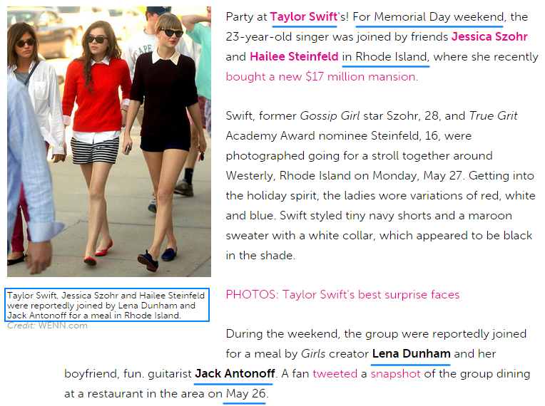

二、完成时间
2013年1月10号，All You Had to Do Was Stay
2013年1月10号，TS在推上说"Back in the studio. Uh oh…"
在1989发行当天，她在Tumblr上说这条推指的是< All You Had to Do Was Stay >
{kind=link}
2013年1月15号，How You Get the Girl
2013年1月15号，TS在INS上发了一张她在工作室弹吉他的图，配字"Somewhere in LA…"
在1989发行当天，她在Tumblr上说这张图片是在制作< How You Get the Girl >
{kind=link}
2013年5月26号之后不久，I Wish You Would
TS和Jack合作的契机是2013年Memorial Day weekend（5月26号），Lena和Jack还有Hailee Steinfeld, Jessica Szohr去TS罗德岛的家中聚会，在聚会中TS发现和Jack有很多音乐上的共同话题于是TS提出要和Jack一起合作，在当天的谈话中谈到了John Hughes的电影，为之后他们创作< I Wish You Would >奠定了基调。
Memorial Day当天还有其他朋友在场，所以两人间的合作应该是在5月26之后不久。
2013年7月-9月间，Bad Blood
7月17号，TS和3个伴舞在推特上相互取关，这3人曾是Katy Perry的伴舞，随后有消息传出他们是离开TS团队去了Katy Perry那边。其中一个伴舞Lockhart Brownlie，在13年12月接受他澳大利亚家乡媒体采访时亲口证实了是Katy Perry邀请他们过去，他们就去了。
{kind=link}
RED北美区的巡演从3月13号开始到9月21号结束，Lockhart Brownlie在13年12月的采访中说他们在TS团队待了半年，所以究竟他们是7月17号跟TS讲他们要跳槽之后就立刻离团了还是一直待到9月北美区结束才离团，我没有去验证。写坏血的时间肯定是7月17号3个伴舞要跳槽后不久。
2013年6月-10月间，Wonderland
豪华版中三首歌的创作时间都没有什么资料证明，只能凭歌词描述的内容估一个大概范围。
Wonderland肯定是写于2013年4月23号DA关闭Tumblr之后，5月底写的IWYW中还有吵架闹翻后悔思念又傲娇不肯告诉对方的情节，到Wonderland中已经是"I reached for you but you were gone"和"You search the world for something else to make you feel like what we had"，黄粱一梦，梦醒时分你已不再。
我个人感觉在9月左右。
2013年10月28号前后，This Love
14年10月28号，TS在Scholastic livechat中说：“诗变成歌词很容易，因为两者很相似，我上一次写一首诗最后变成歌词是，我在日记上写下一些我生活中发生的事，大概就是1年前，我写了一段非常非常短的诗，'this love is good, this love is bad, this love is alive back from dead, these hands had to let it go free, and this love came back to me'，然后我合上日记把它放到床头柜上，接着我脑海中就浮现出一段旋律……”
This Love 写于13年10月28前后。
在Swift Fact中有一则，也证实了This Love最开始只是一首短诗，但马上就变成了一首歌，并且是saying goodbye to the past。
这首歌并非像"this love is alive back from dead"所描述一样是爱人重回身边又一次复合的歌，这是一首分手歌。
在1989 track by track中，TS说
"This Love" is a song that I wrote fairly early on in this process
"This Love"是我制作新专辑过程中写的非常早的一首歌
论写的时间10月28前后已经不算早了，论写的顺序，This Love也不是最早写的几首（前5都排不上），我想这里fairly early的意思是指录得非常早，13年初录完AYHTDWS和HYGTG之后她就没再录音，This Love是13年底录音季开始前最早录音的一首歌。因为这首歌是她独立作词作曲，没有合作者，她不需要等Max Martin和Shellback的时间，她写完后立刻让Nathan帮她录音了。
2013年11月或12月，Blank Space
Blank Space写、录于2013年底前的某时候
在Listening Session With Taylor Swift Part 1（9分03秒开始），TS说
I was preparing all these things, and I think “Blank Space” was like the third thing I played them. And they just stopped and they were like, “No, this is the first thing we’re working on today”
当时还在准备阶段，我记得“Blank Space”是放给他们听的第三首歌，然后他们就停下来表示“我们今天先完成这首歌”
可以看下本节最上面那张时间表，TS和Max合作的歌包括All You Had to Do Was Stay、How You Get the Girl、Bad Blood、Wonderland、Blank Space、Wildest Dreams、New Romantics、Shake it Off、Style。
AYHTDWS和HYGTG在13年初就已经录完了，Shake if Off和Style有拍立得上的日期证实是14年2月录的，Wildest Dreams可能写于13年12月28号，New Romantics也没有那么早。那么可能就是TS给Max他们听了Bad Blood、Wonderland和Blank Space，然后Max认为最先录Blank Space，时间在13年底之前。
13年11月19号TS去过一次录音室，有可能是录写于10月28号前后的This Love，也有可能录sometime before the end of 2013的Blank Space。
{kind=link}
2013年12月上半月，Out of the Woods
在TS和Jack完成< I Wish You Would >之后，他们合作了第2首歌< Sweeter Than Fiction >，此曲收录在One Chance电影原声带中2013年10月21号发行。
当TS在2014年10月14发行1989首个宣传曲< Out of the Woods >之后，Lena为表祝贺，在INS上发了一张图，说这是TS和Jack第一次在他们家（NY）合作时的照片。
TS和Jack都说过< Out of the Woods >的合作是远距离进行的，他们相互把阶段性作品发给对方，所以照片中他俩合作的不是< Out of the Woods >。
在Jack的Wiki介绍中写着：
"Sweeter Than Fiction," a song Antonoff co-wrote with Taylor Swift for the Weinstein Co. film, One Chance, was released. The song was written in Antonoff's New York City apartment
Lena图中TS在Jack家中完成的作品是< Sweeter Than Fiction >，Wiki中接着写道：
Fun. then played with musical heroes Queen in September 2013 at the iHeartRadio Music Festival, which was held at the MGM Grand Garden Arena in Las Vegas, U.S.
在完成< Sweeter Than Fiction >之后，Jack所在的Fun.乐队参加了iHeartRadio音乐盛典，时间是2013年9月18号，也就是< Sweeter Than Fiction >最晚完成于13年9月初。
那么TS和Jack和合作的第3首歌< Out of the Woods >是写于13年9月之后。
OOTW无论从歌词还是TS自己的描述上，都与I Know Places一脉相承，其中对爱情的悲观态度也和Wildest Dreams一致，这三首歌的写作时间应该非常接近。
因为OOTW是一首关于looking back on a lost love的歌，还有"last December we were built to fall apart then fall back together…baby, like we stood a chance"这样的歌词，在13年12月已经no chance, no back了，那么last December就是指12年12月，OOTW的写作时间是13年底，不是14年初。
同一时期写的AYHTDWS和HYGTG描述的是同一个主题，OOTW和WD和IKP同样有很多共同点，WD和IKP的时间很接近，我认为OOTW的时间和这两首也应该很接近，就是12月。TS又说过她是在飞机上收到Jack发给她的伴奏，然后自己唱了一段再发给Jack。13年12月17号之后TS就一直待在LA没走，这个在飞机上的过程很有可能就是发生在大洋洲巡演期间（11月29号-12月14号）。
2013年12月28号，Wildest Dreams
还是基于上述的理由，Wildest Dreams的时间接近OOTW和IKP，IKP是14年1月22号录的，OOTW的时间粗略的看是13年10月-12月之间，那Wildest Dreams也差不多是这个时间。
有TS的粉丝在LOFT89（8月LA站第5场）上问Selena Gomez，最喜欢1989中的哪一首，Selena想了一会后说是Wildest Dreams，因为“她写WD的时候我在场，我知道她为什么写，我知道everything，是的，所以我喜欢WD”
在13年11月之前，Selena和TS各自都在巡演，尤其是Selena的日程，排得非常满，她的Stars Dance Tour从8月开始一直到11月26号才停，而那时TS已经飞去大洋洲巡演了。在13年11月到14年2月底TS完成1989专辑之间，她们只有一次在一起的报道，就是13年12月28号，Selena去TS家喝茶，还一起和Demi Lovato Facetime，度过了一个Saturday night。
{kind=link}
如果Wildest Dreams的确是TS当着Selena的面写的，那写于13年12月28的可能性非常大。
2014年1月22号之前，I Know Places
拍立得上写着，IKP完成于2014年1月22号。
在GRAMMY PRO Listening Session with Taylor Swift Part2中TS说她先将好几首歌的demo先发给Ryan听，然后再录的，IKP是其中之一，也就是1月22号是他们一起完成IKP的时间，TS实际写IKP并录demo是在此之前，也许是13年12月也许是14年1月初。
2014年1月26号之前，Welcome to New York
2014年1月8号，TS受KK影响在纽约看房子，看了好几处，其中包括KK家所在的Greenwich Village，虽然最后是3月份才买，而且买在了Tribeca，但1月初她应该已经有搬家到纽约的准备了。2015年7月10号新泽西/纽约演唱会上她也说"About a year and a half ago, when I moved to what is in my opinion, the greatest city."
1月26号，TS将Welcome to New York的demo放给伴唱歌手们听Taylor plays her backup singers a demo of "Welcome to New York"
Welcome to New York的写作时间差不多就是1月初到1月26号之间。
2014年1月-2月，New Romantics
没有任何证明，个人感觉应该在14年初。
2014年2月9号，Clean
2015年TS接受ELLE采访时提到自己写Clean的经历
"Clean" I wrote as I was walking out of Liberty in London. Someone I used to date—it hit me that I'd been in the same city as him for two weeks and I hadn't thought about it. When it did hit me, it was like, Oh, I hope he's doing well. And nothing else.
TS走出伦敦Liberty商场时突然顿悟到，自己已经不再被情所困，放下一切，找回自己，并邀请Imogen Heap一起合作一首歌。
TS是2014年2月8号下午被人目击出现在伦敦Liberty商场，Clean的合作者Imogen Heap在自己网站上证实TS联系她并提出想合作一首歌，而她们都有空的时间是2月9号星期天，那天TS当着Imogen的面写完了Clean，两人一起工作了10小时完成了这首歌，1989歌词本上的拍立得照片也表示Clean是2月9号完成的。
{kind=link}
从Imogen Heap的博文中可以详细的看到她们合作的契机和过程，在Imogen家，TS先给她弹唱了第1节和副歌，Imogen觉得很不错两人开始合作，到了中午快吃午饭时
I was editing and mixing the bits in, meantime Taylor had written the 2nd verse! Good going gals! Teamwork! It was time for a late lunch.
这时候TS才写了第2节，也就是2月9号之前TS只写了Clean的第1节和副歌，第2节和第3节以及编曲是在2月9号当天在Imogen家里完成的。
2014年2月15号，Shake it Off
2014年2月15号完成录制。
2014年2月19号，Style
2014年2月19号完成录制。
TS在15年接受ELLE采访时说Shake it Off和Clean是1989中最后完成的2首。
"Shake It Off" and "Clean" were the last two things we wrote for the record
但在其他场合她接受采访时说Shake it Off和Style是1989中最后2首，实际录音的时间也是这2首最后。
也许她对ELLE说的wrote是字面意义上的写歌，Style虽然录得晚，但可能写于Shake it Off和Clean之前。
这是一首与时尚有关的歌，在1989演唱会上这首歌是让伴舞表演成走T台的男模，这首歌（巡演前）唯一一次演唱的场合是14年VS，TS会写Style一定是受13年VS的触动，时间可能在13年11月13号VS之后，2月之前。
2014年2月11号之后，You Are in Love
与豪华版中另外两首歌一样，URIL也没有任何资料证明它的完成时间，只知道这是TS和Jack合写的第4首，写于OOTW之后。
前面OOTW的判断是写于12月上半月，那URIL的大致时间范围就是13年12月下半月到14年2月底之前。
基于后文中会详细说的原因，我不认为URIL如TS所说是写Jack和Lena，这首歌是写她自己的，是她自己in love了。
在URIL的歌词中，再也感受不到苦痛挣扎，只有爱意，只有解脱和救赎，个人判断它写于Clean之后，TS从上一段恋情中彻底走出来，并剪去长发迎接新的自己，新的开始。